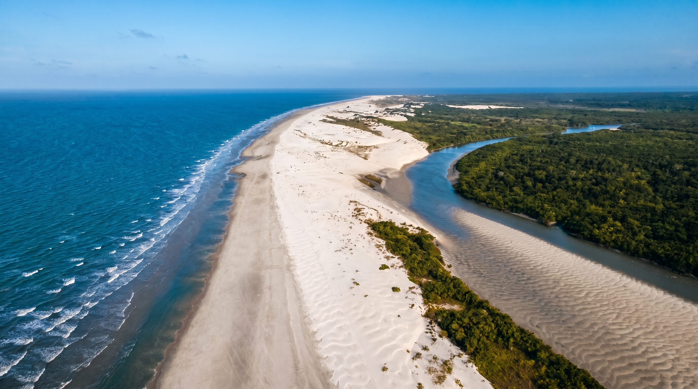
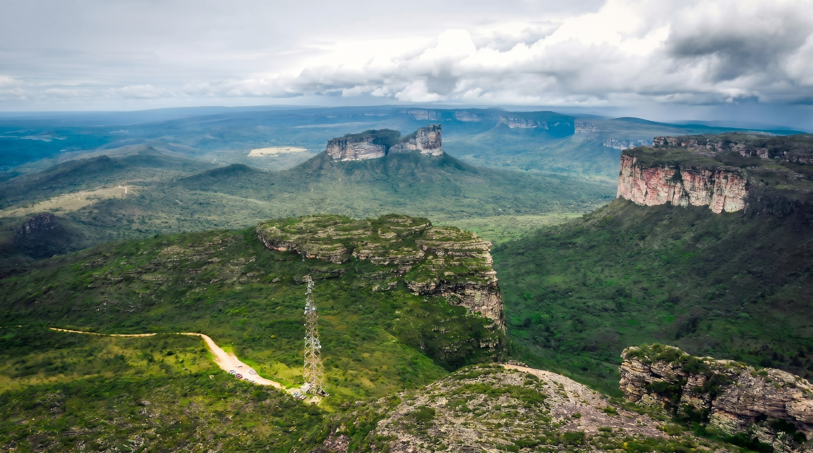
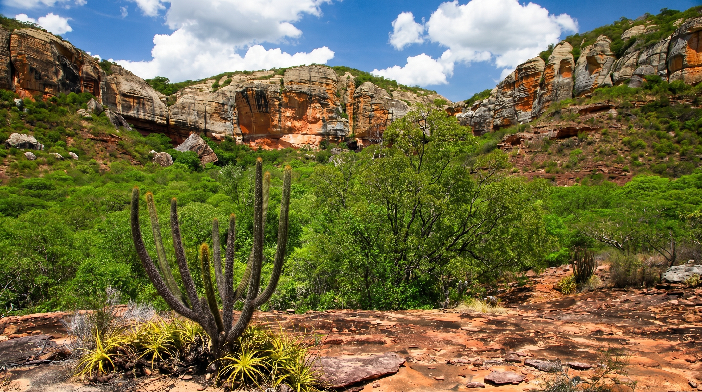
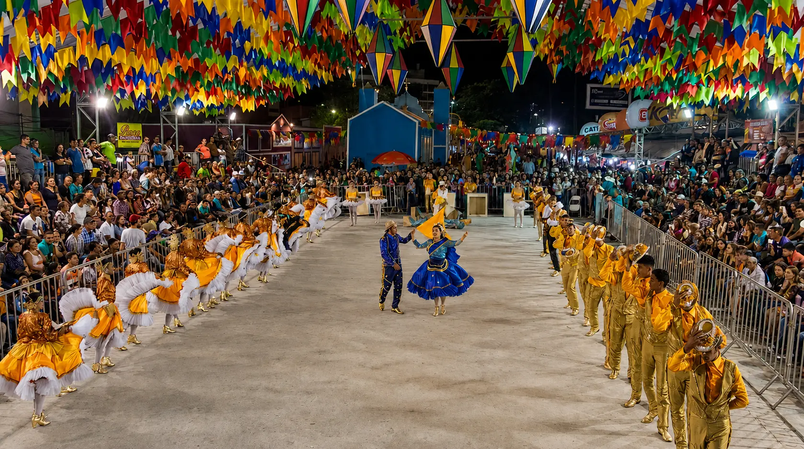

Nordeste
Porto De Galinhas - Ipojuca, Pernambuco.
Sobre a região
A Região Nordeste é conhecida por sua rica diversidade cultural, belas paisagens naturais e forte influência histórica na formação do Brasil. A região abriga extensas áreas litorâneas, praias, dunas, falésias, serras e áreas de Caatinga, único bioma exclusivamente brasileiro.

Área
1.558.000 km²
18,2% do território brasileiro.
População
54,6 milhões de habitantes
26,9% da população brasileira.
Quantidade de estados
9 estados
Alagoas, Bahia, Ceará, Maranhão, Paraíba, Pernambuco, Piauí, Rio Grande do Norte, Sergipe
Capital de referência
Salvador (BA)
Salvador possui grande importância histórica, cultural e turística para o Brasil.



Estados da região Nordeste
Alagoas
Capital: Maceió
Bahia
Capital: Salvador
Ceará
Capital: Fortaleza
Maranhão
Capital: São Luís
Paraíba
Capital: João Pessoa
Pernambuco
Capital: Recife
Piauí
Capital: Teresina
Rio Grande do Norte
Capital: Natal
Sergipe
Capital: Aracaju